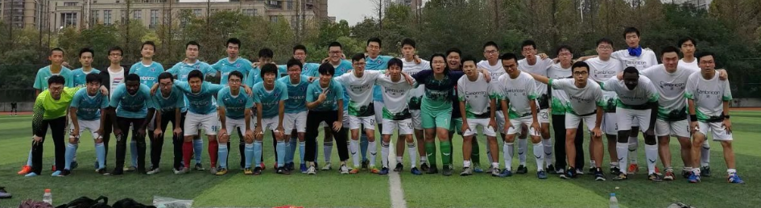
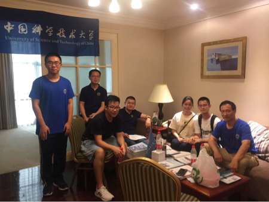
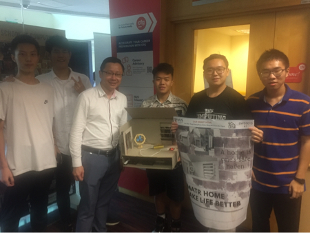

Hi, there!
Welcome to Wen Fan’s homepage
I am a CS undergraduate from University of Science and Technology of China (USTC). I am interested in program analysis and database. I have worked with Prof. Yongkun Li and Prof. Tianyin Xu.
research
I enjoy coding on computer systems and I have done some work on program analysis and database.
Building Global Index Table on Leveldb Sept 2020 - present
Advisor: Prof. Yongkun Li (ADSL, USTC)
When the memory is sufficient, leveldb does not fully utilize it for indexing. Therefore, we tried to read the index block into memory and build a global index table to accelerate indexing. I implemented the bloom filter in global index table and did some performance test. The ongoing project is here.
Optimization on a Static Taint Analysis Tool for Java Application July - Oct 2021
Advisor: Prof. Tianyin Xu (UIUC)
As a static taint analysis tool, cflow has some problems such as non-deterministic output and high false-positive rate. I checked the outputs for many times and found that they were caused by non-deterministic taint propagation and lack of use-checking. Later, I fixed the bug of non-deterministic output and reduce false-positive cases. The code is here.
activities
My college life is not only with GPA and lab work. In fact, I had a lot of fun in USTC.
Firstly, I can’t live a life without football.
- From Nov 2018 to May 2021, I was a center-back in HuoSu football team. I enjoyed playing with my teammates.

- From Sept to Nov in 2019, I was a coach of CS Freshman football team. We trained hard every week and we were qualified from the group stage.
Also, I like to contribute to my school.
- In July 2020, I was a volunteer in USTC freshman recruitment. We were super busy during those days.

- From March to June 2021, I served as a TA of Mathematical Logic. I really appreciated the diligence of my coworkers and students, and I found that teaching is challenging but interesting.
Last but not least, I was happy to communicate with students from other schools.
- In July 2019, I took part in NUS Summer Workshop and worked with my friends from UESTC. We finally built a demo of smart home.

- In Nov 2021, I participated in Pingcap Talent Plan and tried to implement Raft. I admire the coding ability of students from HUST.
awards
I am not the smartest student in USTC, but I still got some awards as an encouragement.
Excellent Student Scholarship, Bronze Award Nov 2019
Huawei Scholarship Nov 2020
Excellent Student Scholarship, Bronze Award Nov 2021
blogs
To Be Done
about
This website leverages the template of t413.com/SinglePaged.